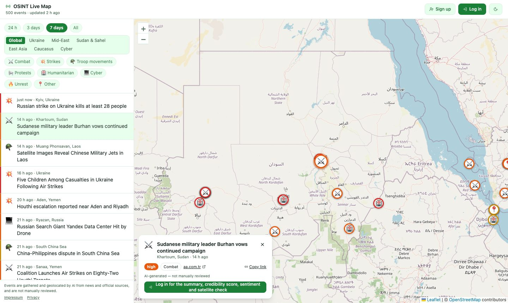

Vienna, Austria
I've spent the last two decades building TEAMBOX, the ERP platform for service providers that's become the PSA market leader in DACH — starting as one of its earliest developers, now running enterprise-level client and product work, CI/CD, and the team behind it. My current focus is agentic engineering: building AI-driven development workflows into a live, twenty-year-old codebase without breaking it.
20+ years, one productPHP & DevOps300+ enterprise clientsAgentic engineering focus
Work Highlights · September 24 – October 8, 2026
Updated monthly, straight from the actual work — not a highlight reel.
Featured build
Connecting an AI agent to our MCP server used to mean a personal API token, a Node.js bridge and a hand-edited config file. Teams without a developer could not finish that, and the token opened the whole API, not just the agent tools.
Users see and revoke connected agents in their settings. Two of the six OAuth steps are merged; the rest are in review, behind one switch.
Read the full writeup →Featured build
An inventory of the API's endpoints looked at every operation the interface uses, not just the ones that looked risky. Every permission gap it found was first proved with a failing test, then fixed.
The permission tests run to about 700 lines, and every test seeds its own data, so none of these gaps can quietly come back.
A review of what reaches central logging, and what reaches AI chat transcripts, found places where credentials could end up. The logger now masks credentials in messages and exceptions before writing them. The repository's AI agent commands for releases, KPIs and reviews no longer ask anyone to paste a token into the chat: they read secrets from files created outside the agent, refuse files other users can read, and never print the value.
Agentic Strategies
Long-form writeups on the methodology — scoping, review discipline, verification, documentation architecture — for anyone doing this kind of work themselves, not just a list of what got built.
Agentic Strategies
Nothing the agents wrote was wrong. It was just too long to read. A shape and a limit for each kind of text, the one habit behind most of the length, and why the fix for long titles was not in the title.
Read the full writeup →Agentic Strategies
An agent reports success the moment it stops working — that isn't the same claim as finished. A fixed set of gates instead of the agent's own judgment, the operating model behind it, and the codebase habits that make agent work easier or harder.
Read the full writeup →Agentic Strategies
Every fresh AI agent session on a legacy codebase faces the same choice: re-analyze everything from the code alone, or read what's already been decided. One canonical guide, read consistently by three different AI tools, and a strict split between what's being asked for, what's been decided and why, and how a specific piece of work is scoped.
Read the full writeup →Agentic Strategies
Running several AI-assisted projects at once creates a specific failure mode: each one drifts its own way, and every session re-explains context the last one already worked out. Persistent per-project instructions, one shared style guide, and a memory system that carries lessons across sessions — the scaffolding that stops it.
Read the full writeup →Personal AI Research · Proof of Concept, July – October 2026
A way to stress-test what Gemini can actually do on real, messy problems instead of toy demos — built independently of TEAMBOX, in Google AI Studio. Keeping both of these consistent with each other, and with the rest of this site, runs on the practice covered in Agentic Strategies →.
Personal AI Research
A maps-based dashboard that monitors global conflict events close to real time. It takes open-source reports — social posts, wire dispatches, radio transcripts — in whatever language they were written, and turns them into structured, geolocated, credibility-scored events a researcher can actually use.

This is a personal research prototype, not a production intelligence product. When the model is unavailable, the app shows the data it already has and invents nothing. Built end-to-end (React, Express, Gemini API, Firestore), deployed to Cloud Run, with a monthly spending cap on every model call.
View live app → Read the full writeup →Personal AI Research
A database that catalogs corporate and executive-level financial crime — fraud, market manipulation, tax evasion, state capture — against the actual enforcement outcome on record: criminal conviction, settlement, deferred prosecution, or litigation still in progress. Built the same way as the OSINT tracker: solo, in Google AI Studio, testing whether an LLM can hold a large, sourced, structured dataset together instead of just summarizing text.
Early-stage research build — React, TypeScript and Firebase/Firestore, seeded with an initial dataset rather than a continuously fact-checked ledger. Treat individual case entries as a starting point for your own verification, not a settled record.
View live app → Read the full writeup →Side Projects · September 2026
Not every personal build is a research prototype. Some are just for the enjoyment of building something that works and is fun to use.
Side Project
A homage to 1980s vector-scope arcade combat games. Drive and fire across a wireframe battlefield against wave-based enemy tanks — the cannon points wherever the hull points, so aiming is driving. No installs, runs straight in the browser, keyboard or touch controls.
EdgesGeometry plus a void-colored occlusion fill, so solid faces hide whatever sits behind them — the look of a 1980s vector cabinet, done with today's rendering.The single-player game and the co-op presence layer above are both live. A fully shared world — where every player fights the same enemies on the same wave — is the next phase, not yet built.
Play → View on GitHub →Side Project
Type any word and it ripples outward in ink and dust — a homage to the title-card treatment in Pluribus, rebuilt from scratch by looking at the effect and asking how it would actually work, not from any production asset.